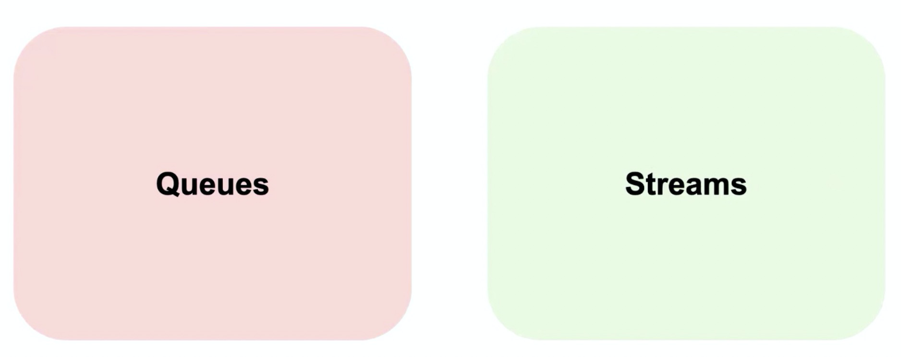
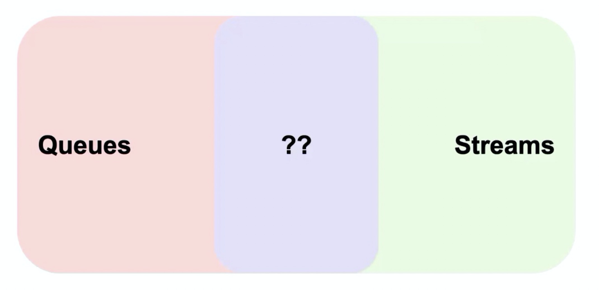
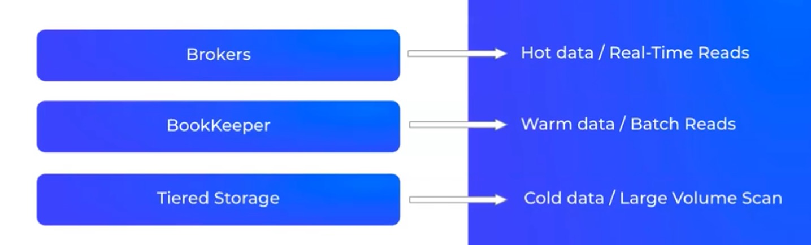

本文为 Apache Pulsar 的入门学习笔记。
企业在考虑部署实时消息系统时，总体硬件成本很重要的。Kafka 是基于磁盘存储数据的，存储成本较高。
而 Pulsar Broker 不直接存储数据，而是使用 Apache BookKeeper 来存储数据。数据发送/接收和存储的解耦使得 BookKeeper 可以在运行在独立的物理计算机或容器上。
当新生事物出现有两种角度去观察它，要么把它看小，要么把它放大。对 Apache Pulsar，把它看小的角度通常是”Apache Pulsar 只是一个新的消息队列而已”，或者“Apache Pulsar 只是一个新的数据管道而已”，“队列系统早就有了，只是 Apache Pulsar 更具扩展性也能解决某些场景问题而已，基本没啥本质区别”。很明显上述认识都不对，Apache Pulsar 在消息、流、数据管理和技术基础设施层面都有技术演进，详看正文。
Pulsar 兴起的原因
消息队列的发展史：
在 pulsar 之前，消息系统主要有两个应用场景：
- 应用之间的解耦缓冲，出现了大量的MQ。
- 随着流计算的兴起，Kafka 被大量使用。

未来实时技术设施建设通常有以下3大趋势：
- 消息系统的融合
- 批流存储融合
- 云原生
Converged Messaging 消息系统的融合
- Queuing 模式
应用系统消息处理；
系统间异步通信；
常用的有 RocketMQ、RabbitMQ、AMQP、JMS；
- Streaming 模式
流通常用在数据流水线里，数据量较大，高吞吐量；
常用的有 Kafka、Kinesis；
- Queuing vs Streaming
队列和流通常用于不同的应用场景下。

- Queuing + Streaming
队列和流本身是做不到完全隔离的，队列中的数据通常需要通过流导入到数仓中。

一个业务系统通常需要使用多个消息系统，举例如下：
刚开始做业务的时候，创建了两个微服务，如果两个微服务之间需要通信，就会拉一个消息队列（RabbitMQ、ActiveMQ等）进来。随着业务的增长，需要接入一些 IoT 设备，使用 MQTT broker 去查一些 IoT 设备。此时业务需要对 IoT 设备进行流计算计数等处理，此时就会引入 Kafka，所有数据通过 Kafka Connector 集中汇聚到 Kafka，做集中的流计算处理。同时流计算的处理结果，可能需要写回 MQTT 或者其他业务系统。

此时调用链路和数据存储方式是比较混乱的，业务人员可能不知道从哪里取数：

Pulsar = Queues + Streams 的融合：

据调研，有42%的用户在考虑用 Pulsar 替换业务中使用的2种及以上的消息队列。
Unified Batch and Event-Stream Storage 批流存储融合
传统的数据库处理，就是不停的插入数据，再用 SQL 批量查询出数据：

举一个快递员送餐的例子，用户一旦下单，他最关心的是餐什么时候能送到？
不仅要看当前的实时位置信息，还需要结合历史经验数据中天气、交通等因素对送餐速度的影响：


Pulsar = 批 + 流 的存储融合：

Cloud-Native Operations 以云原生的方式部署和运维
Cloud Native Computing Foundation，云原生计算基金会。Cloud native technologies empower organizations to build and run scalable applications in modern, dynamic environments such as public, private, and hybrid cloud. Containers, service meshes, microservices, immutable infrastructure, and declarative APIs exemplify this approach.

- Kubernets ，应该是跑在 k8s
- Infinite，可以支持无限扩容
- Serverless，业务服务是无状态的，可随时扩展
- Multi Tenant，支持多租户
- Geo Replicated，支持运行在不同的云厂商上，并且可以支持在不同的云厂商之间复制服务
- Elastic
- Secure and reliable，协议和数据存储应该是加密的，端到端的传输也是加密的
- API-driven operations，透出统一的 API 服务
Pulsar 的 Hot data、Warm data、Cold data 存储分离：

据调研，有50%的用户倾向于部署在 k8s/Cloud。
Apache Pulsar 简介
综上，Pulsar 可以很容易的运行在 k8s 上，同时能集成多种云厂商作为其层级存储。Pulsar 提供了队列和流的统一模型，同时通过 Protocol Handler 的方式支持了其他消息系统的协议，如 Kafka Clients、AMQP Clients、MQTT Clients。这些都使得 Pulsar 完美的成为消息、流、存储融合的解决方案。
特性
计算与存储分离
Pulsar 的 Producer 和 Consumer 都与 broker 相连接，broker 作为无状态服务，可以横向扩缩容，扩缩容时不会影响数据的整体生产和消费；broker 不存储数据，数据存储在 broker 的下一层，即 bookie 中，实现了计算与存储分离。
节点对等，独立扩展，弹性水平扩容
对于云端产品而言，Pulsar 无需重平衡即可实现 broker 扩缩容。相比之下，Kafka 扩缩容前需要先进行重平衡操作，可能会导致集群负载较高，也会对整体服务产生影响。其次，Pulsar topic 分区也可以实现无限扩容，扩容之后，通过负载均衡策略自动平衡整个分片和流量。Pulsar 多租户
Pulsar 原生支持多租户。在日志服务中也有租户的概念，每一条产品线属于一个租户，实现了产品线之间的数据隔离。Pulsar 集群支持数百万个 topic，整个 topic 也通过租户实现了隔离，在租户级别，Pulsar 实现了存储配额、消息过期删除、隔离策略等优越特性，且支持单独的认证和授权机制。
负载均衡策略
Pulsar 在命名空间级别有 bundle 的概念，如果当前 broker 负载较高，bundle 会通过管理 topic 分区策略进行 bundle split 的操作，自动将子分区均衡到其他负载较低的 broker 上。在创建 topic 时，Pulsar 也会自动把 topic 优先分配到当前负载较低的 broker 上。
Pulsar IO 模型
写入操作中，broker 并发向 BookKeeper 写入数据；当 bookie 向 broker 反馈数据写入成功时，在 broker 层面，内部只维护一个队列。如果当前的消费模式是实时消费，则可以直接从 broker 获取数据，无需经过 bookie 查询，从而提升消息吞吐量。在 append 读场景中，查询历史数据才需要查询 bookie； append 读还支持数据卸载功能，即将数据卸载到其他存储介质中（比如 HDFS），实现冷存历史数据。Topic 创建、生产与消费
在控制台创建 topic 后，将 topic 信息和租户信息记录到 etcd 和 MySQL 中，producer 和 consumer 两类服务会监听 etcd。producer 类服务，监听创建或删除 topic 的内部操作。consumer 服务监听到创建 topic 操作后，对应的服务会连接到 Pulsar topic，实时消费 topic 上的数据。 producer 开始接收数据，并判断应该向哪一个 topic 写入数据，consumer 消费数据并在判断后写入，或转存再写入到 ES 等其他存储中。Topic 逻辑抽象
Pulsar 有3个级别：topic、命名空间和租户。在日志服务中，topic 对应 Pulsar 逻辑上的分片，命名空间对应 Pulsar 逻辑上的 topic。通过将整体概念往上提一层，实现了两个功能，一是动态增加和减少分片数量，二是在后台启动的 Flink 任务可以消费单个项目级别的数据。
消息订阅模型
Pulsar 提供四种消息订阅模型：- 独占模式（Exclusive）：当有多个 consumer 使用同一个订阅名称订阅 topic 时，只有一个 consumer 可以消费数据。
- 故障转移模式（Failover）：当多个 consumer 通过同一个订阅名称订阅 topic 时，如果某一个 consumer 出现故障或连接中断，Pulsar 会自动切换到下一个 consumer，实现单点消费。
- 共享模式（Shared）：应用比较广泛的一个模型，如果启动多个 consumer，但只通过一个订阅者订阅 topic 信息，Pulsar 会通过轮询方式依次向 consumer 发送数据；如果某一个 consumer 宕机或连接中断，则消息会被轮询到下一个 consumer 中。LogHub 使用的就是共享订阅模型，整个 Hub 运行在容器中，可以根据整体负载或其他指标动态扩缩容消费端。
- Keyed_Shared 消息订阅模式：通过 Key Hash 方式保持数据消费的一致性。
Broker 故障恢复
由于 broker 无状态，所以某一个 broker 宕机对整体的生产和消费没有任何影响，同时会有一个新的 broker 担任 owner 的角色，从 Zookeeper 中获取 topic 元数据，并自动演进到新 owner 中，数据的存储层也不会发生变化。此外，无需拷贝 topic 内的数据，避免数据冗余。Bookie 故障恢复
bookie 层使用分片存储信息。由于 bookie 本身有多副本机制，当某个 bookie 出现故障时，系统会从其他 bookie 读取对应分片的信息，并进行重平衡，因此整个 bookie 的写入不会受到影响，保证整个 topic 的可用性。原生跨地域复制

数据视图
pulsar视图之topic_partiiton分区：

pulsar视图之partiiton_segment分片：

pulsar计算历史数据：
- 获取 Segments 列表
- 选择需要扫描的 Segments
- 使用 Segments reader 直接访问 Segments

pulsar计算实时数据：
- 使用 Pulsar broker 的接口：Pub/Sub API

功能完整性
Pulsar 是一个完整的消息和流融合的产品：

高吞吐量

稳定的低延时
pulsar 的时延基本稳定在 5～10ms 之间，Kafka 随着partitions数据的增多，时延会升高。
生态社区支持

Cloud offerings
StreamNative Cloud
Apache Pulsar as a Service
除了阿里云，还会部署到 Google Cloud、Microsoft Azure、亚马逊、腾讯云等。
Roadmap
- Pulsar Transaction (2.7.0 developer preview)，2.7.2 中已支持
- Function Mesh
- Auto-Scaling Topic Partitions
- Pulsar No-keeper
- Columnar Tiered Storage
Pulsar vs Kafka vs RocketMQ
| 分类 | 对比项 | RocketMQ | Kafka | Pulsar |
| 定位 | 轻量级数据处理平台 | 分布式事件流平台 | 云原生的分布式数据处理平台 | |
| 基础功能对比 | 消费模式 | 推、拉 | 拉 | 推 |
| 订阅模式 | 点对点，发布订阅 | 发布订阅 | 发布订阅，点对点 | |
| 消息存储 | 支持，较高 | 支持，较高 | 支持，较高 | |
| 多租户 | 不支持 | 不支持 | 支持 | |
| 写入性能 | 好 | 非常好 | 非常好 | |
| 消费性能 | 好 | 非常好 | 非常好 | |
| 稳定性 | 好 | 分区过多或扩容时，写入性能下降 | 分区较多时，性能稳定 | |
| 支持topic数量 | 单机5万队列，支撑较好 | 单机超过 60+ topic，负载升高 | 5万topic，性能稳定 | |
| 消息优先级 | 支持 | 不支持 | 不支持 | |
| 死信队列 | 支持 | 不支持 | 支持 | |
| 消息TTL | 支持 | 支持 | 支持 | |
| 可靠性对比 | 可靠性 | 很好 | 很好 | 很好 |
| 优缺点对比 | 优点 |
高吞吐量，低延迟; 支持顺序消息，事务等，功能较全; 不受分区限制，水平扩展能力强; |
高吞吐量，低延迟，高可用，高容错; 生态较好，大数据领域使用较广; |
高吞吐量，低延迟，高可靠，高容错; 计算存储分离，水平扩展和不需要重平衡; 支持的 topic 分区数可达百万级; |
| 缺点 |
吞吐量不如Kafka; 不支持 master 主动切换，客户端只支持java; |
集群消费受分区数目限制; 单机 partition 过多，性能下降明显; 重平衡对生产运行影响较大; |
使用案例较少; 社区文档不成熟; |
应用场景
- Pulsar 在日志服务中的应用
日志服务系统的最底层是数据采集工具，我们基于开源的数据采集工具（如 Logstash、Flume、Beats）进行了定制化开发。数据存储中日志池是一个逻辑概念，对应于 Pulsar 中的 topic。日志服务系统的上层为查询分析和业务应用，查询分析指在日志服务的工作台进行检索分析，或通过 SQL 语法进行查询；业务应用指在控制台定制仪表盘和图表，实现实时告警等。
查询分析和业务应用都支持数据转存，即把日志数据转存到存储介质或价格较低的存储设备中，如基于 KS3 的对象存储、ElasticSearch 集群或 Kafka。

计费平台、支付平台、交易系统
Worker Queue / Push Notifications / Task Queue
Unified Messaging Backbone (Queuing + Streaming)
IoT 车联网、物联网领域
Unified Data Processing - Flink
Flink 和 Pulsar 的批流融合
Flink 角色：
- 对批流处理提供统一的模型和 API
- 处理大规模的历史数据和低延迟的实时数据
Pulsar 角色：
- 提供对批流数据的统一存储视图
- 通过层级存储提供无限的流存储
- 提供统一的消费模型
pulsar flink connector 目前还没有合并到 flink 仓库，维护在单独的仓库中：pulsar-flink github地址
- Pulsar Schema
第一种是常见的消息元数据，包括消息的key、消息产生时间、或其他元数据的信息。Primitive Schema:
1 | root |
第二种是对消息的内容的数据结构的描述，常见的是 Avro 格式，用户访问的时候就可以通过 Schema 知道每个消息对应的数据结构。Avro Schema:
1 | case class Foo(i: Int, f: Float, bar: Bar) |
1 | root |
- Pulsar Source
有了 Schema ，就可以把它作为一个 source：
1 | StreamExecutionEnvironment see = StreamExecutionEnvironment.getExecutionEnvironment(); |
- Pulsar Sink
也可以把 Flink 计算的结果返回给 Pulsar：
1 | FlinkPulsarSink<Person> sink = new FlinkPulsarSink( |
- Metadata
| 元数据 | 数据类型 | 描述 | R/W |
|---|---|---|---|
| topic | STRING NOT NULL | Pulsar 消息所在的 topic 名称 | R ｜ |
| messageId | BYTES NOT NULL | Pulsar 消息Id | R ｜ |
| sequenceId | BIGINT NOT NULL | Pulsar 消息的序列号 | R ｜ |
| publishTime | TIMESTAMP(3) WITH TIME ZONE NOT NULL | Pulsar 消息的发布时间 | R ｜ |
| eventTime | TIMESTAMP(3) WITH TIME ZONE NOT NULL | Pulsar 消息的生成时间 | R/W ｜ |
| properties | Map<STRING,STRING> NOT NULL | Pulsar 消息的扩展信息 | R/W ｜ |
- Stream Tables
有了 source 和 sink 的支持，就自然能支持 table。
1 | StreamExecutionEnvironment see = StreamExecutionEnvironment.getExecutionEnvironment(); |
1 | CREATE TABLE table_pulsar ( |
- Pulsar Catalog
1 | catalog: |
1 | tableEnv.useCatalog("pulsarcatalog"); |
1 | Flink SQL> USE CATALOG pulsarcatalog; |
参考资料
Pulsar 官网
Pulsar 社区
Apache Pulsar 分层存储帮你省钱
Flink 和 Pulsar 的批流融合 文章
Flink 和 Pulsar 的批流融合 视频
Apache Pulsar 在腾讯大数据场景下的落地实践 视频
Pulsar Summit Asia 2020 主题演讲：大融合：消息、流、存储三位一体（郭斯杰）
Apache Pulsar 消息、流和存储的融合 视频
RocketMQ 淘汰倒计时！这个新一代消息中间件，腾讯、华为都用疯了？
为了处理日均TB级数据量，金山云选择用 Pulsar 实现日志服务